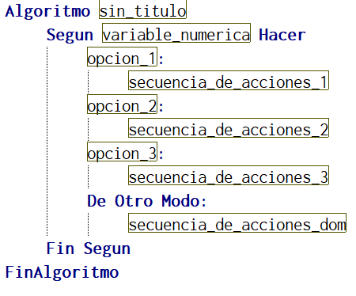

La estructura selectiva permite escoger dentro de un conjunto de opciones una dentro del conjunto.
Según: Permite trabajar con un sistema de valor numero, donde, según el valor elegido ocurría una secuencia de acciones.
Desarrollo:
- Debe existir previamente la variable con la que se trabajará, ya sea por el comando ‘Leer’, o por ‘Asignar’
- La variable solo debe ser de valor numérico, no se permite del tipo texto
- Para comenzar el comando, este inicia con la palabra ‘Segun’ seguido de la variable numérica previamente existente y seguido de la palabra ‘Hacer’
Estructura

Nota: Con la sentencia según se puede diseñar algoritmos de tipo menú de opciones.